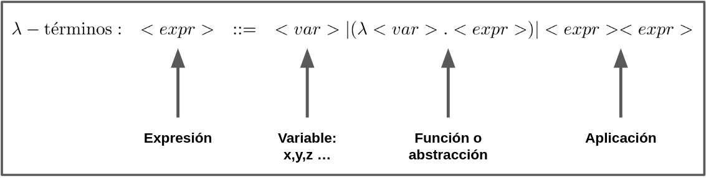
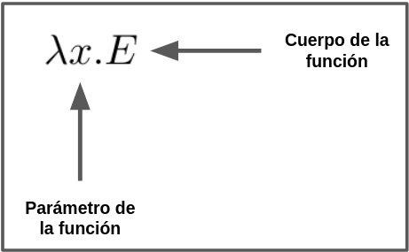
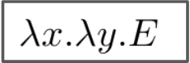
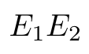
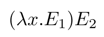
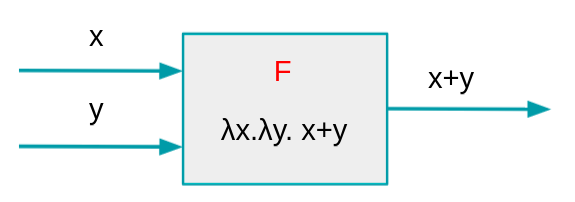
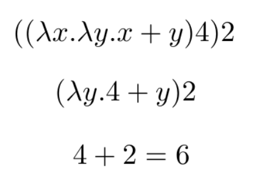
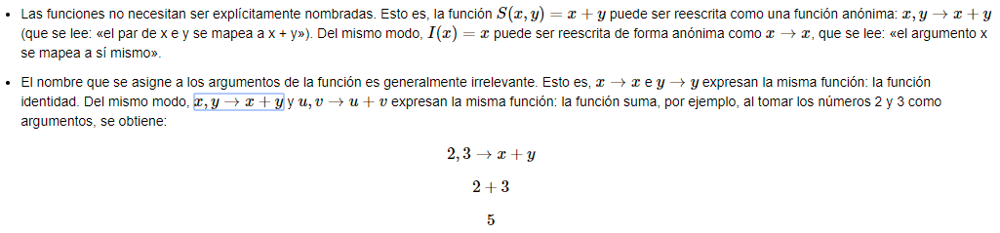
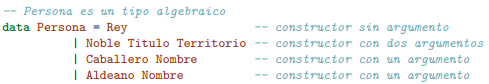
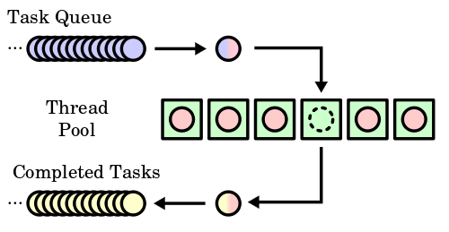

Motivación
Para entender mejor la programación funcional, debemos tener claro que con ella resolvemos a
la
pregunta ¿Qué? mientras que la programación imperativa responde a la pregunta
¿Cómo?
Al responder la pregunta del “¿Qué?”, nos enfocamos en el resultado y no en el
procedimiento.
Esto
implica un nivel mayor de abstracción, pero también que la programación es independiente del
contexto.
Uno de los principios del paradigma es hacer que las funciones sean lo más
específicas
posible. De esta manera se cumple otro de los principios de este paradigma: la reutilizacion
de
código
-pues, como veremos, las funciones retornarán lo mismo siempre a lo largo de toda la
ejecución
del programa-.
Paradigma Declarativo
La intención es el que se hace, más no el cómo se hace.
Una de las preguntas que todo programador de calidad debe hacerse antes de empezar a trabajar es ¿Que tecnología es la mejor
para solucionar este problema? Una pregunta complicada pero que con la respuesta indicada puede facilitar mucho el trabajo, es
por ello que usualmente se opta por usar una tecnología con la cual se encuentre familiarizado, es por ello que la programación
declarativa no se nos suele pasar por la cabeza, ya que usualmente usamos la programación imperativa.
¿De que se trata la programación declarativa?
En el paradigma de programación declarativa a diferencia del paradigma de programación imperativa el programa se describe en términos
de su respuesta, más no en el conjunto de secuencias e instrucciones para llegar a ella, esto puede llegar a ser complicado
debido a que usualmente los algoritmos programados se realizan en torno a los pasos para la solución de un problema específico,
pero para el paradigma declarativo es más importante tener bien definido un conjunto de condiciones, proposiciones, afirmaciones,
restricciones, ecuaciones o transformaciones las cuales modelan la solución al problema en cuestión.
Declarativo
- Control del programador es nulo en la secuencia del programa
- Se enfoca en el que
- Lista como estructura fundamental
- No hay asignación destructiva
- Solo existen valores y expresiones matemáticas que generan nuevos valores desde los ya declarados
- El control no es responsabilidad del programador
Imperativo
- El programador tiene control sobre la secuencia del programa
- Se enfoca en el cómo
- Se fija en como realizar operaciones ayudándose de patrones de control de flujo
- Asignación destructiva
- Presenta efectos colaterales
- El control por parte del programador es excesivo
Historia
Todo empiezó con Gottfried Leibniz, quien creó la máquina mecánica de cálculo en el siglo XVII. Esta máquina fue el primer prototipo del dispositivo soñado por Leibniz: una máquina capaz de manipular símbolos y determinar si una frase matemática era o no un teorema, es decir, si una proposición que partía de un supuesto (hipótesis), afirmaba una verdad (tesis) que no es evidente por sí misma.

Para el año de 1928, los matemáticos David Hilbert y Wilhelm Ackermann propusieron el
problema
de la
decisión, que consiste en encontrar un proceso o algoritmo (aún no se tenía la definición
formal
de
algoritmo como tal) general, que decidiera si una fórmula de cálculo de primer orden es un
teorema
retomando la idea desarrollada por Leibniz.

En 1936, Alonzo Church desarrolló la definición formal de algoritmo bajo el concepto de “calculabilidad efectiva” y diseñó una solución al problema planteado por Hilbert y Ackermann utilizando un modelo de computación denominado por él mismo como Cálculo Lambda, la base fundamental de este paradigma.


En este mismo año, Alan Turing -al igual que Church- desarrollaba una definición de algoritmo y daba solución al problema de la decisión, pero usando las máquinas de Turing, otro modelo de computación que se convertiría en la base de la computación actual, bajo un concepto completamente diferente al cálculo lambda: el problema de la parada. Cabe aclarar que los dos modelos computacionales son equivalentes ya que ambos pueden dar solución a los mismos tipos de problemas.
El paradigma funcional se empezó a desarrollar por el matemático John McCarthy en 1956, para programar los primeros proyectos de inteligencia artificial sobre un computador IBM 704 durante su desarrollo este crea el lenguaje de programcion lisp en 1958.
Lisp fue creado originalmente como una notación matemática práctica para los programas de computadora, basada en el cálculo lambda de Alonzo Church. apesar de no ser un lenguaje puramente funcional Se convirtió rápidamente un lenguaje de programación pionero en la investigación de la inteligencia artificial (AI) estableciendo las bases de lo que se conoceria hoy como el paradigma funcional

Cálculo Lambda
Es el más pequeño lenguaje universal de programación, consiste en en una regla de transformación simple (sustituir variables) y un esquema simple para definir funciones.
El cálculo lambda se puede decir que es equivalente a las máquinas Turing porque es capaz de evaluar y expresar cualquier función computable. Originalmente, Church había tratado de construir un sistema formal completo para modelar la Matemática; pero cuando éste se volvió susceptible a la paradoja de Russell, separó del sistema al cálculo lambda y lo usó para estudiar la computabilidad, culminando en la respuesta negativa al problema de la parada.
Es un sistema formal que utiliza la abstracción del concepto de función desde un punto de vista computacional. Esta consiste de 3 simples reglas:
- El uso de variables que representan funciones o valores matemático-lógicos. [x]
- Definición de funciones como términos Lambda. [(λx.M)]
- Aplicación de funciones. Dados términos consecutivos, el primero es una función que toma como parámetros los valores necesarios a su derecha, de acuerdo a su definición. (M N)

Estas reglas se pueden evidenciar de la siguiente manera:
Cada una de las partes de la expresión tiene un respectivo significado:
Variables: Son la representación abstracta de un objeto, se pueden nombrar con distintas letras.
Abstracción o función: Es la definición de una función donde:
Como las funciones pueden tener una expresión como cuerpo, la siguiente sería una expresión válida:
Debido a que en el cálculo lambda formal una función solamente pueden recibir un único parámetro, es necesario utilizar la currificación. El ejemplo anterior evidencia como una función con un parámatro X, tiene como cuerpo otra función con parámetro Y, la cual tiene como cuerpo una expresión E.
Aplicación: Una expresión seguida de otra.
Uno de los aspectos fundamentales del cálculo lambda es la (β-reducción).
Al aplicar (β-reducción), se reemplazan las apariciones libres de X en el cuerpo E1 con la expresión E2.
Ejemplo de β-reducción utilizando cálculo lambda formal:
El siguiente ejemplo muestra cómo realizar la suma de dos numeros utilizando cálculo lambda.
Suponga que tenemos la función f(x,y) = x+y, a continuación se muestra un gráfico que representa las entradas de la función y la respectiva salida.
Se puede evidenciar como hay 2 funciones, la más externa recibe X como parámetro y tiene como cuerpo otra función que recibe Y como parámetro, el cuerpo de esta función interna es X+Y. Se va a realizar β-reducción con los parámetros 4 y 2. Se empieza resolviendo la función que esté más a la izquierda, para esto se reemplaza cada aparición de X en el cuerpo de la función con 4. Una vez reducida esa función, se realiza el mismo procedimiento con el otro parámetro.
El resultado final de reducir la expresión es 4+2 obteniendo como resultado 6.
Con estas simples reglas se pueden formular los operadores lógicos más básicos, como se muestra a continuación:
TRUE = λx. λy. x
FALSE = λx. λy. y
NOT = λb. b TRUE FALSE
AND = λx. λy. x y FALSE
OR = λx. λy. x TRUE y
Considérese las siguientes dos funciones. Por un lado, la función identidad I(x)=xI(x)=x, que toma un único argumento, xx, e inmediatamente devuelve xx. Por otro lado, la función suma S(x,y)=x+yS(x,y)=x+y, que toma dos argumentos, xx e yy, y devuelve la suma de ambos: x+yx+y, usando estas dos funciones como ejemplo podemos decir:
Ventajas
- Altos niveles de abstracción: El código muestra un mayor énfasis en el "¿qué se hace?" en lugar del "¿cómo se hace?".
- Código declarativo y comprensible: Debido a los altos niveles de abstracción, los programas que aplican este paradigma suelen ser más cortos y fáciles de entender que sus versiones en programación imperativa.
- La evaluación perezosa: Esta estrategia de evaluación permite realizar cálculos por demanda, evitando gasto computacional innecesario. El ejemplo más claro está en la utilización de listas infinitas. El uso de Lazy Evaluation permite optimizar el tiempo necesario para realizar computaciones. Múltiples plataformas de Big Data, como Apache Spark, hacen uso del paradigma para obtener estos beneficios.
- Las características del paradigma, en especial la utilización de funciones puras, permiten realizar ciertas optimizaciones particulares.
- Mayor probabilidad de aplicar expansión en línea: Esta es una optimización del compilador que sustituye los llamados a una función por la definición directa de dicha función, de tal forma que se ahorre tiempo y espacio durante la ejecución.
- Las características del paradigma, en especial la utilización de funciones puras, permiten realizar ciertas optimizaciones particulares.
- Optimizaciones a partir de la utilización de funciones puras: Las funciones puras nos
garantizan
la ausencia de efectos secundarios. Esto a su vez nos permite aplicar las siguientes
mejoras:
- Se pueden eliminar las funciones cuyo resultado no sea utilizado.
- Una función retornará lo mismo siempre que se ejecute con los mismos parámetros, por lo cuál se puede evitar la repetición de cálculos mediante el uso de memoria caché.
- El orden de ejecución de las funciones puede ser cambiado o incluso se puede llegar a aplicar paralelismo cuando no exista dependencia de datos entre dichas funciones.
Desventajas
- Dificultad inicial para producir buen código: Esto debido a que un programador suele estar acostumbrado al pensamiento de la programación imperativa, tomando un poco de tiempo que la persona logre adaptarse y generar código útil. No solo eso, sino que la terminología incluida dentro de la programación funcional (combinator, monoid, monad, functor) puede ser intimidante cuando se inicia desde una base de programación netamente imperativa. Y puede ser aún peor cuando no se posee experiencia en el tema.
- Generación de grandes cantidades de short-lived garbage: Esto se debe principalmente a la caracteristica de inmutabilidad. Los garbage collectors tienden a optimizar este aspecto.
- Menor eficiencia en el uso de CPU comparados con su contraparte imperativa: Debido principalmente a que muchas estructuras de variables mutables (como los arreglos) tienen una sencilla implementación en un paradigma imperativo, mientras que en la programación funcional no es fácil crear componentes homólogos inmutables con la misma eficiencia.
- El uso de I/O (Archivos, Bases de datos y GUIs) se vuelve un problema. La manipulación de estas entradas y salidas requiere de funciones netamente impuras. Un programa que provea utilidad al usuario necesitará, en la gran mayoría de casos, acceso a este tipo de entradas y salidas.
Ventajas tecnicas
Ventajas relacionadas con el uso de lenguajes funcionales o faciles de implementar debido a sus principios aplicados en estos
Expresividad
Dado que la programacion funcional simplifica el codigo de manera significativa el uso de esta facilita en gran manera la definicion de las estructuras globales lo que permite un mayor entendimiento de estas un ejemplo de esto es el uso de los datos algebraicos en haskell que son aquellos que nos permiten el uso de argumentos como constructores una extencion de las funciones de orden superior usadas en este paradigma.
Seguridad
Inmutabilidad:Caracteristica existente en los lenguajes funcionales en la cual que un objeto no puede cambiar su estado. Como consecuencia, esta caracteristica aporta muchas facilidades al momento de razonar sobre el codigo que estemos creando, y a que no tenemos que preocuparnos por cambios que puedan sufrir los objetos a lo largo del programa. Como ventaja adicional, los objetos que son inmutables, se vuelven automáticamente seguros en el manejo de hilos (o thread-safe) de manera en que pueden ser accedidos de manera concurrente sin presentar ningun tipo de "side effects" debido a que no pueden modificarse. Manejo de errores:Debido a la caracteristica principal de este paradigma (programar mediante fucniones),Es relativamente mas facil detectar errores en el codigo, ya que al separarlo por funciones, no es necesario revisar todo el codigo como habria que hacerlo si se hubiera programado de forma imperativa.
Paralelismo
Dado que en la programacion funcional no existe un estado global no es necesario implementar las tecnicas de paralelismo como (Multexes, Semáforos, Locks) por lo cual se pueden realizar funciones en paralelo siempre que estas cumplan con ciertas reglas al momento de su ejecucion
Por otro lado, la concurrencia es mucho más segura. Las funciones puras son seguras para hilos (thread-safe), es decir, siempre garantizan que nunca va a suceder que dos procesos concurrentes intenten acceder a los mismos datos al mismo tiempo. Esto se conoce como condiciones de carrera y es uno de los bugs más difíciles de solucionar; dado que las funciones puras nunca comparten estados con las demás secciones de un programa, nunca tienen condiciones de carrera.
Lenguajes de programación
SCALA
Es un lenguaje de programación multi-paradigma diseñado para expresar patrones comunes de programación que integra características de lenguajes funcionales y orientados a objetos. La implementación actual corre en la máquina virtual de Java y es compatible con las aplicaciones Java existentes. En Scala las funciones son valores de primera clase, soportando funciones anónimas, orden superior, funciones anidadas y currificación. Scala viene integrado de fábrica con la técnica de pattern matching para modelar tipos algebraicos usados en muchos lenguajes funcionales. El siguiente código muestra una de las características de la programación funcional, el pasar funciones como argumentos de otras funciones.

SCHEME
Es un lenguaje funcional (si bien impuro pues sus estructuras de datos no son inmutables) y un dialecto de Lisp. Fue desarrollado por Guy L. Steele y Gerald Jay Sussman en la década de los setenta e introducido en el mundo académico a través de una serie de artículos conocidos como los Lambda Papers de Sussman y Steele. La filosofía de Scheme es minimalista. Su objetivo no es acumular un gran número de funcionalidades, sino evitar las debilidades y restricciones que hacen necesaria su adición. Así, Scheme proporciona el mínimo número posible de nociones primitivas, construyendo todo lo demás a partir de un reducido número de abstracciones. Las listas son la estructura de datos básica del lenguaje, que también ofrece arrays entre sus tipos predefinidos. Debido a su especificación minimalista, no hay sintaxis explícita para crear registros o estructuras, o para programación orientada a objetos, pero muchas implementaciones ofrecen dichas funcionalidades. El siguiente ejemplo muestra porque Scheme es un lenguaje funcional impuro, permitiendo realizar estructuras como for, las cuales incumplen la regla de que los objetos son inmutables.
Haskell
Es un lenguaje de programación estandarizado multi-propósito puramente funcional con semánticas no estrictas y fuerte tipificación estática. Su nombre se debe al lógico estadounidense Haskell Curry. En Haskell, "una función es un ciudadano de primera clase" del lenguaje de programación. Como lenguaje de programación funcional, el constructor de controles primario es la función. El lenguaje tiene sus orígenes en las observaciones de Haskell Curry y sus descendientes intelectuales. Las características más interesantes de Haskell incluyen el soporte para tipos de datos y funciones recursivas, listas, tuplas, guardas y calce de patrones.

CLOJURE
Es un lenguaje de programación de propósito general que maneja el dialecto de Lisp, está enfocado en el paradigma funcional y fue diseñado con el fin de eliminar la complejidad de la programación concurrente, se puede ejecutar sobre la máquina virtual de Java, la máquina de la de la plataforma .NET o compilado a JavaScript. Este lenguaje usa una gestión de referencias que pueden ser actualizadas aplicando funciones pras al estado actual, permitiendo un enfoque al cambio de estado de la programación imperativa promoviendo el uso de funciones puras como mejor forma de realizar cálculos. Fue diseñado por Rich Hickey, quien describe el desarrollo de Clojure como la búsqueda de un lenguaje funcional como el Lisp, pero por defecto, que estuviera integrado sobre un entorno robusto en lugar de ser su propia plataforma y que eliminara la programación concurrente. Así mismo rechaza por completo el paradigma de los objetos, expresando los programas como aplicación de funciones sobre datos mas que sobre interaccion e entidades.
OCaml
Objective CAML, su etimología proviene de las siglas Objective Categorical Abstract Machine Language. Es un lenguaje de programación avanzado de la familia ML, desarrollado por INRIA en Francia, admite varios paradigmas, entre ellos el funcional. Nace de la evolución del del lenguaje CAML, al integrarse la operación con objetos. El código en Ocalm, se compila en código para una máquina virtual o en código de máquina para diferentes arquitecturas que permiten una eficiencia comparable con la producida por lenguajes como C o C++.


JavaScript
Si bien JavaScript no es un lenguaje funcional puro, por medio del uso de algunos conceptos, prácticas y librerías que nos permiten emplear este paradigma:
- Asegurar inmutabilidad de los datos con los que trabaja tu aplicación.
- Uso de funciones de orden superior.
- Uso del currying.
- Composición de funciones.
JavaScript permite la declaración de funciones puras muy facilmente por medio del comando function. Las funciones de orden superior map, filter y reduce, son los pilares de la programación funcional en JavaScript. La composición de funciones es muy similar al manejo de java, con la notación punto.
La programación funcional en JavaScript es muy util pues previene la creación de efectos colaterales en los datos de las aplicaciones. Programación funcional en JavaScript
JAVA 8+
Java es un lenguaje multiparadigma creado por Sun Microsystems (comprada luego por Oracle) en 1991.
En marzo de 2014, es lanzada la versión Java SE 8 la cual incluye expresiones Lambda, añadiendo así funcionalidad de programación funcional.


Kotlin
Es un lenguaje de programación de tipado estático, el cual corre sobre la máquina virtual de Java y también puede ser compilado a código fuente de JavaScript. Fue principalmente desarrollado por JetBrains en sus oficinas en San Petersburgo. Su nombre proviene de una isla llamada Kotlin ubicada cerca a San Petersburgo.
Este lenguaje permite realizar programación funcional debido a que cuenta con inferencia de tipo, permite trabajar con funciones de alto orden y con funciones como ciudadanos de primera clase.
PYTHON
Python es un lenguaje de programación potente y fácil de aprender. Tiene estructuras de datos de alto nivel eficientes y un simple pero efectivo sistema de programación orientado a objetos. La elegante sintaxis de Python y su tipado dinámico, junto a su naturaleza interpretada, lo convierten en un lenguaje ideal para scripting y desarrollo rápido de aplicaciones en muchas áreas para la mayoría de plataformas. El ejemplo a continuación ilustra el uso de maps en lugar de iteradores para aplicar funciones a conjuntos de datos.